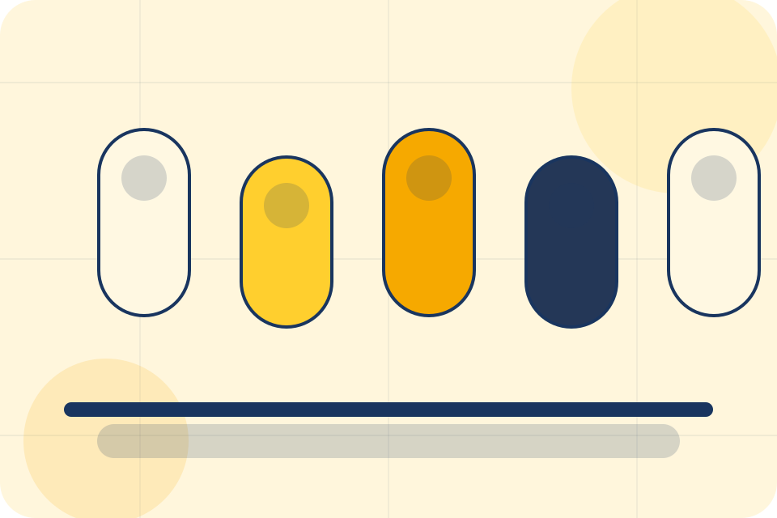
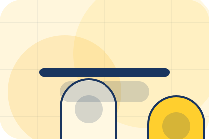
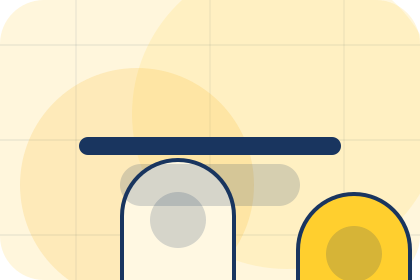
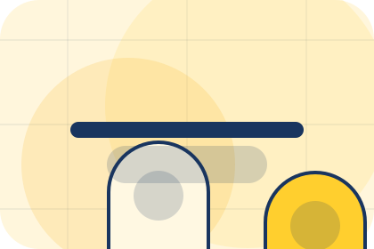
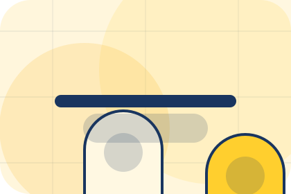
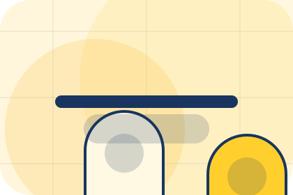
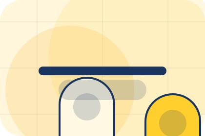
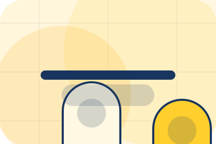
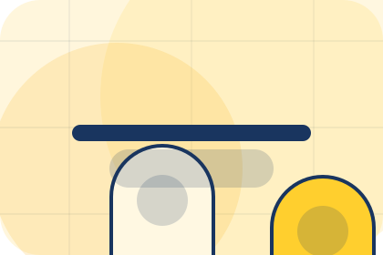
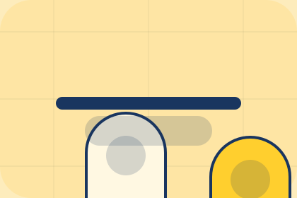

Services / 01
Services by Luma
Services shaped for wellness, personal care & lifestyle services decisions.
Services opens as a clear wellness decision hub: what Luma offers, who it helps, why it matters, and which route to take first.
The first screen combines positioning, proof, primary action, and fast internal navigation, so people can act immediately or compare the rest of the services route with context.
Clear intakeHuman follow-upPractical reassurance
Product routine hero
Choose a starting profile
Select the closest route and Luma keeps the next step, proof, and follow-up expectation aligned with personal improvement and reassurance.

Services / 02
Overview
Overview explains the practical scope, best-fit situations, and expected outcome so wellness visitors can compare options without decoding jargon.
The section keeps the offer concrete: what is included, who it is best for, what decision it supports, and which linked route gives the deeper detail.
Explore ServicesLuma structures overview around best fit, what changes, and a clear next route so visitors can compare the block quickly before they book a consultation.
Book ConsultationServices / 03
Treatments
Treatments explains the practical scope, best-fit situations, and expected outcome so wellness visitors can compare options without decoding jargon.
The section keeps the offer concrete: what is included, who it is best for, what decision it supports, and which linked route gives the deeper detail.
Explore Services

Best Fit
Who should use treatments and when it belongs in the services journey.
Services / 04
Programs
Programs explains the practical scope, best-fit situations, and expected outcome so wellness visitors can compare options without decoding jargon.
The section keeps the offer concrete: what is included, who it is best for, what decision it supports, and which linked route gives the deeper detail.
Explore ServicesBest Fit
Who should use programs and when it belongs in the services journey.

What Changes
The practical benefit visitors should expect after choosing this route.

Deeper Route
Where to compare details, pricing, support, or contact options before committing.
Services / 05
Consults
Consults explains the practical scope, best-fit situations, and expected outcome so wellness visitors can compare options without decoding jargon.
The section keeps the offer concrete: what is included, who it is best for, what decision it supports, and which linked route gives the deeper detail.
Explore ServicesWho should use consults and when it belongs in the services journey.
The practical benefit visitors should expect after choosing this route.
Where to compare details, pricing, support, or contact options before committing.
Services / 06
Benefits
Benefits defines the better state Luma is built to create, with enough detail to make the promise believable.
A routine-first wellness shop with offer strip, product education, rounded capsules, and evidence-led reassurance. The section grounds that direction in concrete benefits, visible tradeoffs, and a next route visitors can use when the promise feels relevant.
Explore ServicesBetter State
Benefits defines what becomes clearer, easier, or safer when Luma is the chosen route.
Practical Gain
The benefit is tied to personal improvement and reassurance, not a vague quality claim.
Proof Route
Visitors get a linked path to compare the promise against services, standards, or examples.
Services / 07
Fit
Fit explains the practical scope, best-fit situations, and expected outcome so wellness visitors can compare options without decoding jargon.
The section keeps the offer concrete: what is included, who it is best for, what decision it supports, and which linked route gives the deeper detail.
Explore ServicesBest Fit
Who should use fit and when it belongs in the services journey.
What Changes
The practical benefit visitors should expect after choosing this route.
Deeper Route
Where to compare details, pricing, support, or contact options before committing.
Services / 08
Experience
Experience explains the practical scope, best-fit situations, and expected outcome so wellness visitors can compare options without decoding jargon.
The section keeps the offer concrete: what is included, who it is best for, what decision it supports, and which linked route gives the deeper detail.
Explore Services

Best Fit
Who should use experience and when it belongs in the services journey.
Services / 09
Questions
Questions explains the practical scope, best-fit situations, and expected outcome so wellness visitors can compare options without decoding jargon.
The section keeps the offer concrete: what is included, who it is best for, what decision it supports, and which linked route gives the deeper detail.
Open ContactBest Fit
Who should use questions and when it belongs in the services journey.

What Changes
The practical benefit visitors should expect after choosing this route.

Deeper Route
Where to compare details, pricing, support, or contact options before committing.
What happens first?
Luma starts with a focused intake so the recommendation matches the visitor's context, risk, timing, and readiness.
How is scope kept clear?
Each route explains inclusions, exclusions, documents, timing, and the decision points that affect final delivery.
How is this site different?
The theme uses routine commerce shelf, supplement capsule cards, and routine builder, service fit quiz, package toggle rather than a shared template rhythm.
Product routine hero
Choose a starting profile
Select the closest route and Luma keeps the next step, proof, and follow-up expectation aligned with personal improvement and reassurance.
Services / 10
Book Consultation
Luma closes the services route with a clear action, a quick reminder of the value, and a low-friction way to book a consultation.
Visitors who are ready can use the primary action. Visitors who are still comparing can scan the section links, proof, and support routes before they book a consultation.
Book ConsultationThe final block keeps the choice simple: act now, compare one more proof route, or send enough detail for a focused response.
Book Consultationpersonal improvement and reassurance
Book Consultation
A routine-first wellness shop with offer strip, product education, rounded capsules, and evidence-led reassurance. Services ends with a direct path to book a consultation, plus enough context for visitors who still need to compare.

Book ConsultationNotes
Information is provided for planning and should be reviewed for the final client, location, and operating rules.